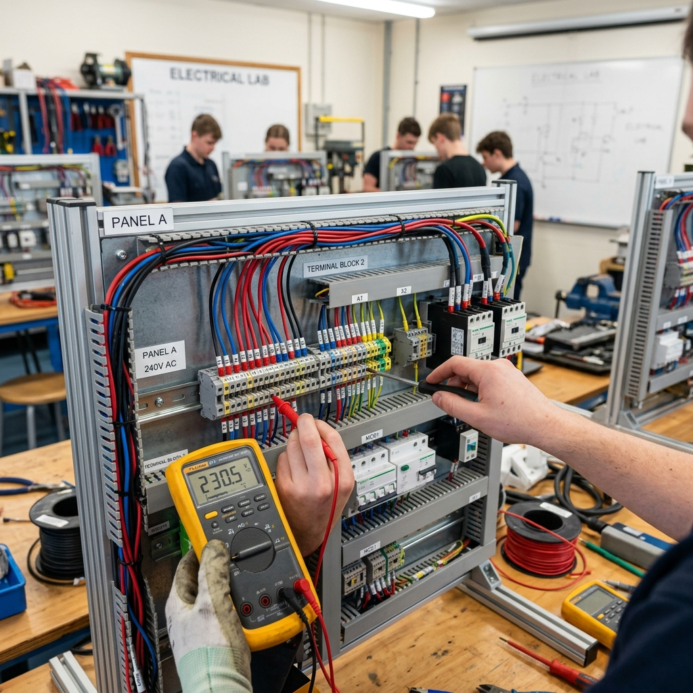
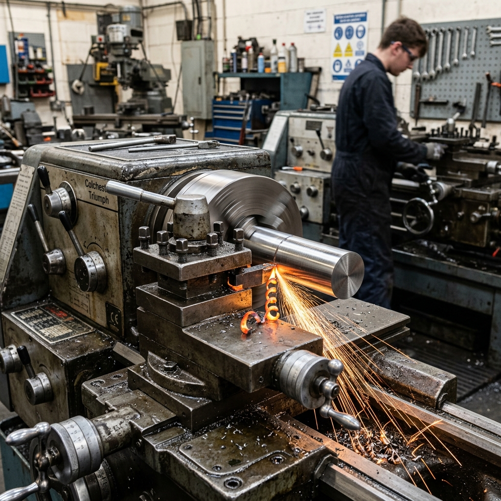
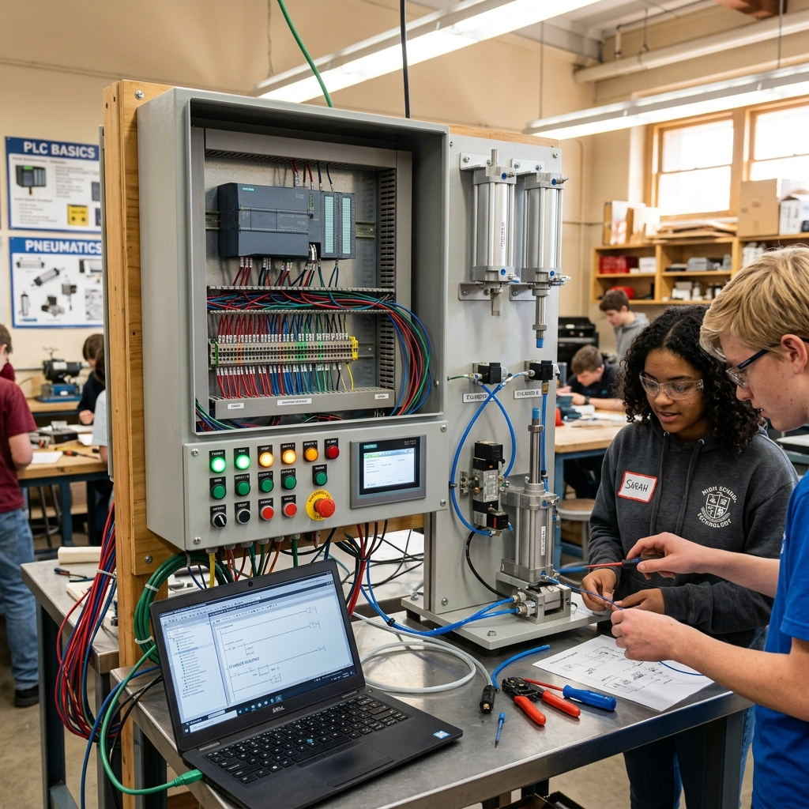
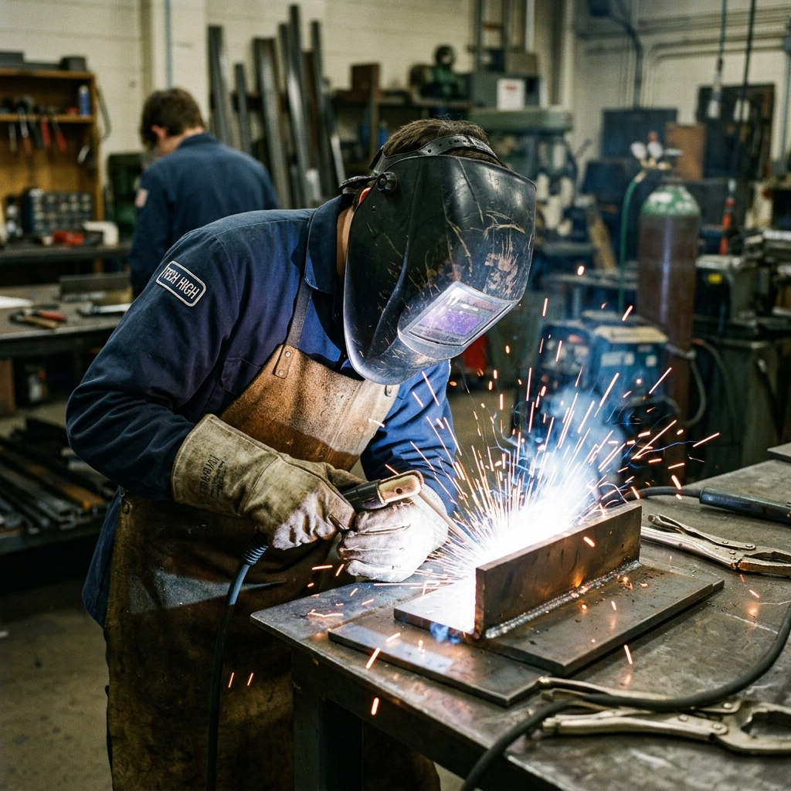
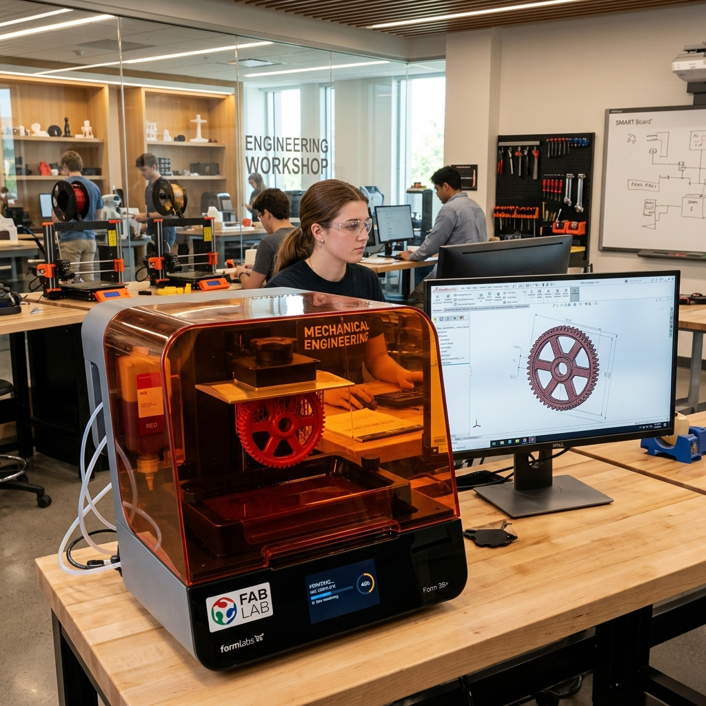

Área de Electromecánica
Tecnología, industria y producción
Formación técnica en electricidad, mecánica y automatización, preparando estudiantes para el mundo industrial.
Conoce más¿Por qué estudiar electromecánica?
La electromecánica es la columna vertebral de la producción moderna. Nuestra propuesta educativa integra el dominio de sistemas eléctricos, dispositivos mecánicos y tecnologías de control automatizado para capacitarte de forma integral en el diseño y resolución de sistemas industriales complejos.
Aprender electromecánica significa entender la interacción entre la energía eléctrica y el movimiento mecánico, combinando clases analíticas con un fuerte trabajo de taller con maquinaria industrial real, forjando destrezas prácticas inigualables y un alto sentido de la seguridad ocupacional.
Aprendizaje basado en proyectos
Los estudiantes aplican sus conocimientos en proyectos reales, integrando electricidad, mecánica y automatización para resolver desafíos industriales.
🔌 Instalaciones Eléctricas
Diseño y montaje de circuitos industriales y sistemas de distribución.
⚙️ Mecánica de Precisión
Fabricación y ensamblaje de componentes mecánicos con alta exactitud.
🏭 Automatización Industrial
Programación de PLCs y desarrollo de sistemas de control automatizado.
🧰 Mantenimiento Preventivo
Diagnóstico, inspección y reparación de equipos para garantizar continuidad.
Electricidad Industrial
Los alumnos aprenden el diseño, montaje y mantenimiento de circuitos eléctricos de baja y media tensión, sistemas de iluminación y tableros de comando industrial.
Se trabaja bajo normas vigentes de seguridad eléctrica, uso de instrumental y dimensionamiento de cables y protecciones térmicas y magnéticas.


Mecanizado y Tornería
Formación práctica en el uso de tornos paralelos, fresadoras, limadoras y herramientas de banco para la producción y reparación de piezas mecánicas de precisión.
Se estudian tolerancias geométricas, metrología avanzada, interpretación de planos técnicos e higiene y seguridad industrial en talleres mecánicos.
Automatización y PLCs
Introducción a los sistemas de control automático y lógica cableada y programable (PLCs). Los estudiantes desarrollan proyectos de neumática e hidráulica aplicadas.
Ideal para comprender los procesos productivos modernos y el control de motores eléctricos mediante variadores de frecuencia y sensores industriales.


Soldadura y Estructuras Metálicas
Capacitación en técnicas de unión de materiales metálicos utilizando soldadura eléctrica por arco (electrodo revestido) y sistemas semiautomáticos (MIG/MAG).
Enfoque riguroso en el uso de equipamiento de protección personal, técnicas de trazado, corte de metales y ensamblaje seguro de estructuras.
Diseño Técnico y Prototipado 3D
Modelado en software CAD (Diseño Asistido por Computadora) para concebir piezas tridimensionales y planos técnicos estandarizados.
Los diseños se materializan utilizando impresoras 3D del taller escolar, permitiendo fabricar prototipos funcionales y piezas mecánicas a medida.

Salida laboral y Futuro Profesional
Los técnicos electromecánicos egresados de nuestra escuela técnica adquieren un perfil altamente versátil y valorado, lo que les permite insertarse rápidamente en el ámbito industrial o emprender sus propios proyectos.
Industria y Manufactura
Operación, supervisión y mantenimiento de líneas de producción automatizadas e instalaciones industriales complejas.
Instalaciones y Redes
Diseño y ejecución de proyectos eléctricos comerciales e industriales, y control de tableros de comando.
Sistemas Mecánicos
Mecanizado de piezas, mantenimiento de motores y diseño de sistemas mecánicos integrados.
Estudios Superiores
Base sólida para continuar carreras universitarias como Ingeniería Electromecánica, Industrial o Mecánica.